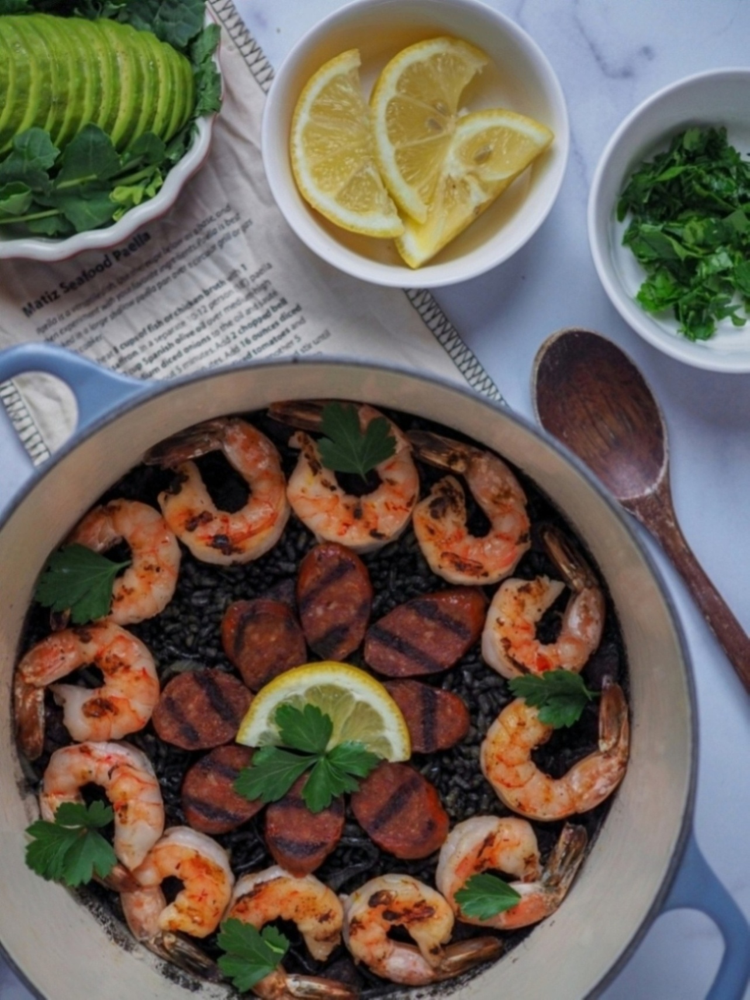

Arroz Negro (Squid Ink Rice) with Grilled Shrimp and Linguica
Yield: 4 servings
Prep Time: 15 minutes
Cook Time: 45 minutes
Inspired by the Catalan and Valencian classic, Arroz Negro (Squid Ink Rice) is a dish somewhat similar to paella. The traditional recipe is made with seafood broth, spices, shrimp, squid, paella rice, and squid ink. Fluffy rice on top and crispy on the bottom. A super helpful tip is to blend the squid ink with water so it gives the rice even shades of beautiful black hues. This version is made with saffron spices, grilled linguica for its garlicky, mild spicy flavor, and succulent juicy grilled shrimp.
Ingredients
- 1 cup of paella rice
- 1 tbsp of squid or cuttlefish ink
- 1 shallot, minced
- 1 tbsp olive oil, for cooking
- 2 1/4 cup of water
- 16-20 shrimp, patted dry and seasoned with salt and pepper
- 1 link of linguica sausage
- 1 pinch of saffron threads
- 1 tsp salt
For Serving
- Lemon wedges
Optional Sauce
- 1/4 cup of mayo
- Tabasco (or any hot sauce; flavor to taste)
Directions
Blend 2 1/4 cups of water with 1 tbsp squid ink. Set aside.
Dice half of the linguica sausage and slice the other half into thin slices.
In a medium pot or paella pan, heat 1 tbsp of olive oil on medium. Add thinly sliced shallots and linguica.
Saute until fragrant and the natural oils from the linguica is released.
Add 1 cup of rice and continue sautéing. Add a pinch of saffron.
Turn heat to high and pour 1 cup of squid ink blended water into the pot. Stir it a little and then pour the final 1 1/4 cup. Do not stir the rice anymore.
Turn the heat down to simmer. Cover and let it rest for 30 minutes.
Using a cast iron skillet or grill pan, grill the linguica sausages until nicely browned. Set aside.
Grill the shrimp in the linguica oil for extra flavor.
Once the rice has fully cooked, turned the heat up to high to let it crisp up on the bottom for a few minutes.
Arrange the linguica and shrimp onto the rice and serve with plenty of lemon wedges.
Usually served with an aioli, you can make a quick easy sauce instead with tabasco and kewpie mayo.